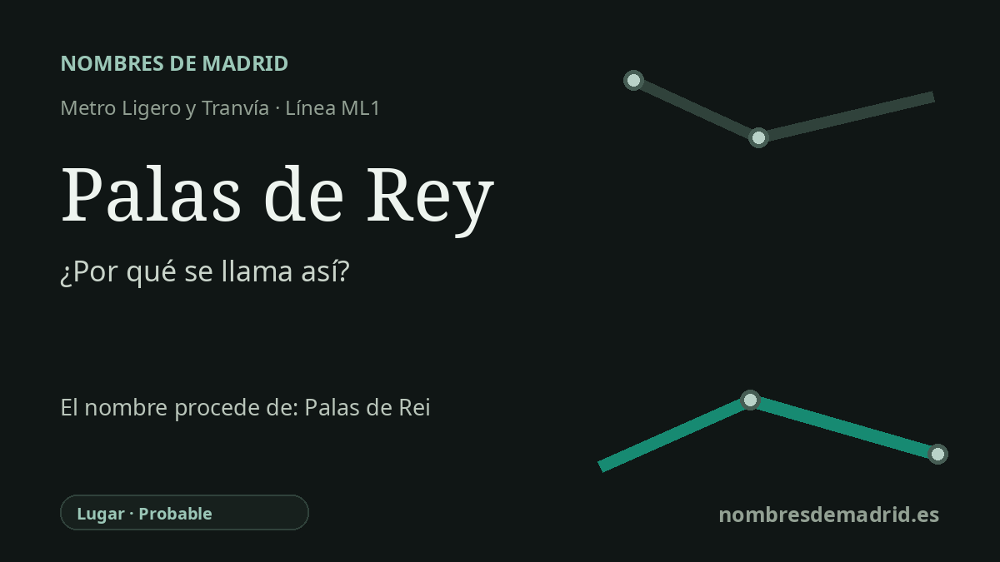

Publicado el · Investigación de Nombres de Madrid · Cómo verificamos cada origen · 10 fuentes consultadas
Respuesta rápida
La estación Palas de Rey toma su nombre de la cercana calle de Palas de Rey, en Las Tablas. Esa calle remite a Palas de Rei, en Lugo, una villa del Camino Francés cuyo nombre medieval aparece como Pallatium/Palatinum Regis, aunque la etimología completa es discutida.
La historia del nombre
La estación Palas de Rey recibe el nombre de su entorno inmediato: el CRTM sitúa su acceso en la calle de Palas de Rey, y la parada forma parte de la ML1 en el área de Las Tablas, dentro de Fuencarral-El Pardo. En términos madrileños, es una estación de nombre viario, como muchas paradas de los nuevos desarrollos urbanos.
El nombre de la calle mira hacia Galicia. Palas de Rei, escrito a menudo en castellano como Palas de Rey, es un municipio de Lugo situado en el Camino Francés, una de las rutas históricas hacia Santiago de Compostela. La documentación patrimonial de la Xunta para el Camino Francés describe Palas de Rei como uno de los núcleos principales de ese tramo gallego y subraya su presencia en itinerarios medievales de peregrinación.
La explicación más conocida hace derivar Palas de Rei del latín Pallatium Regis, 'palacio del rey'. Romanico Digital cita formas documentales como Palatinum Regis en documentos de Alfonso IX de 1200 y 1210, y la documentación de la Xunta sobre el Camino recoge la forma Pallatium Regis en el Códice Calixtino. Esa evidencia medieval hace importante la asociación con un palacio real, aunque no resuelve todos los problemas lingüísticos.
La tradición más vistosa añade una capa visigoda: el supuesto palacio del rey Witiza, que reinó a comienzos del siglo VIII, y el relato de que mató en Palas a Fáfila o Favila, padre de Pelayo. Conviene contarlo como tradición, no como hecho demostrado. La página de Toponimia de Galicia de la Xunta/RAG dice expresamente que el primer elemento Palas es un enigma etimológico y recoge alternativas académicas, incluidas hipótesis no latinas.
Por tanto, el nombre público está bien asentado en el plano madrileño: la estación Palas de Rey toma el nombre de la calle de Palas de Rey. La historia gallega de fondo es más rica y menos segura: las formas medievales apoyan una lectura vinculada a un lugar regio, pero la derivación limpia desde palatium hasta Palas y el episodio de Witiza siguen siendo materia debatida o legendaria.